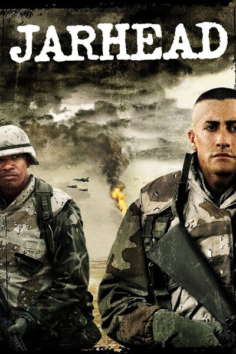

| Categories |
2000 |
1990 |
| Posters |
 |
 |
| Title |
Jarhead |
Pulp Fiction |
| Director |
Sam Mendes |
Quentin Tarantino |
| Producer(s) |
Douglas Wick, Lucy Fisher |
Lawrence Bender |
| Writer(s) |
William Broyles, Jr. |
Quentin Tarantino, Roger Avary |
| Actors |
Jake Gyllenhaal, Peter Sarsgaard, Chris Coooper, Jamie Foxx |
John Travolta, Samuel L. Jackson, Uma Thurman, Harvey Keitel, Tim Roth, Amanda Plummer, Maria de Medeiros, Ving Rhames, Eric Stoltz, Rosanna Arquette, Christopher Walken, Bruce Willis |
| Cinematographer |
Roger Deakins |
Andrzej Sekula |
| Description |
In the late 1980s, Anthony Swofford (Jake Gyllenhaal) enlists as a Marine, training in boot camp under a sadistic drill instructor. Swofford undertakes a sniper course headed by Staff Sgt. Sykes (Jamie Foxx) during this time, which is shortly before the advent of the Gulf War. When the United States becomes involved, Swofford is shipped out, along with his spotter, Alan Troy (Peter Sarsgaard). Facing uncertainty each day -- about the war and home -- the soldiers try to maintain composure. |
Vincent Vega (John Travolta) and Jules Winnfield (Samuel L. Jackson) are hitmen with a penchant for philosophical discussions. In this ultra-hip, multi-strand crime movie, their storyline is interwoven with those of their boss, gangster Marsellus Wallace (Ving Rhames) ; his actress wife, Mia (Uma Thurman) ; struggling boxer Butch Coolidge (Bruce Willis) ; master fixer Winston Wolfe (Harvey Keitel) and a nervous pair of armed robbers, "Pumpkin" (Tim Roth) and "Honey Bunny" (Amanda Plummer). |
| Release Date |
November 4th, 2005 |
October 14th, 1994 |